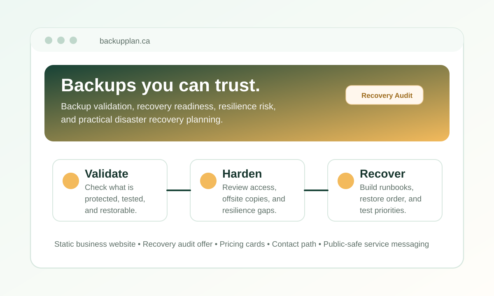

Portfolio Website Link
BackupPlan.ca
A static business website focused on backup validation, recovery readiness, resilience, and practical continuity planning for Canadian businesses.

Overview
What this link represents
BackupPlan.ca turns backup and recovery expertise into a clear service website for organizations that need to know what is protected, what has been tested, where recovery assumptions are weak, and what should be improved first.
The website presents recovery audit services, recovery planning, restore testing, Microsoft 365 review, monitoring and alerting, and a simple contact path for business inquiries.
Scope
Website Highlights
- Homepage messaging built around trust, recoverability, and proof instead of backup assumptions.
- Recovery Audit section describing critical system inventory, restore testing, access review, retention, vendor recovery, alerting, and a 30/60/90-day roadmap.
- Service cards for backup recovery audits, recovery planning, Microsoft 365 review, restore testing, and backup monitoring.
- Pricing cards for a snapshot review, full recovery audit, and managed recovery advisory option.
- Static implementation that keeps the launch path simple and maintainable.
Employer Value
Why it belongs in the portfolio
- Shows direct alignment between professional backup and recovery experience and a practical business offering.
- Demonstrates the ability to translate technical resilience work into language that business owners can act on.
- Connects entrepreneurial thinking, recovery architecture, risk reduction, website delivery, and operational clarity.
Technical Notes
Recovery-Focused Messaging
The site positions backup work around restore confidence, ownership, testing, and runbooks.
Simple Launch Surface
The static site structure supports lightweight hosting while keeping the business message easy to maintain.